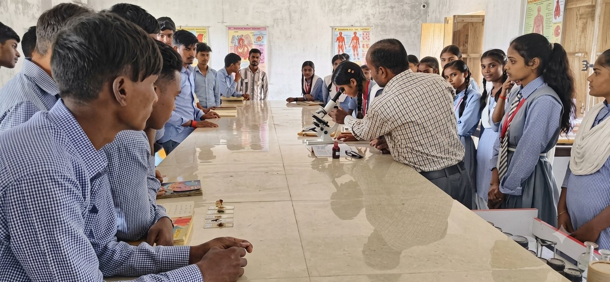
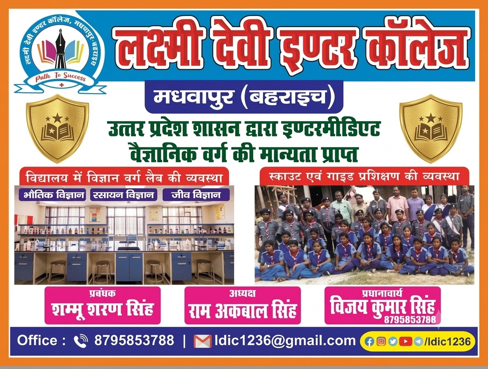

प्रायोगिक शिक्षा
विज्ञान वर्ग लैब की व्यवस्था
विद्यालय में विद्यार्थियों को प्रदर्शन-आधारित एवं प्रायोगिक शिक्षण के माध्यम से वैज्ञानिक अवधारणाओं को समझने का अवसर मिलता है। प्रयोगशाला में विद्यार्थी स्वयं प्रयोगों में भाग लेते हैं, जिससे उनकी सैद्धांतिक जानकारी व्यावहारिक अनुभव में परिवर्तित होती है।
भौतिक विज्ञान
रसायन विज्ञान
जीव विज्ञान

विज्ञान प्रयोगशाला
विषयवार सुविधाएँ
Laboratory Highlights
भौतिक विज्ञान
यांत्रिकी, प्रकाशिकी एवं विद्युत से जुड़े मूलभूत प्रयोग एवं प्रदर्शन।
रसायन विज्ञान
रासायनिक अभिक्रियाओं व यौगिकों को समझने हेतु प्रायोगिक कक्षाएँ।
जीव विज्ञान
सूक्ष्मदर्शी के माध्यम से जैविक नमूनों का अवलोकन एवं अध्ययन।
झलकियाँ
Lab in Action
